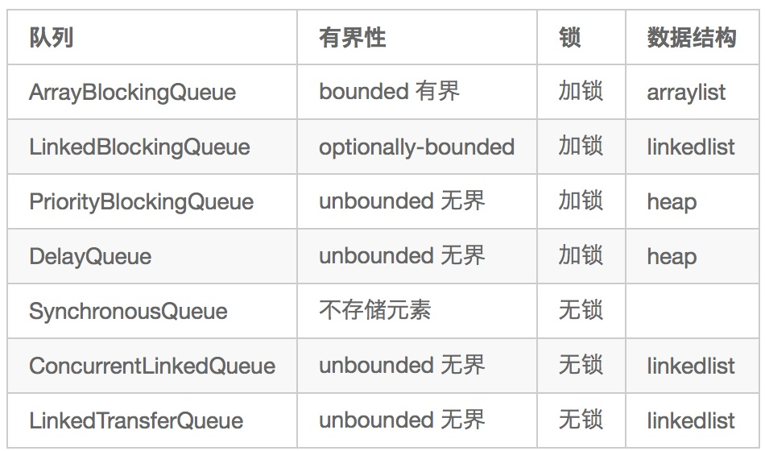
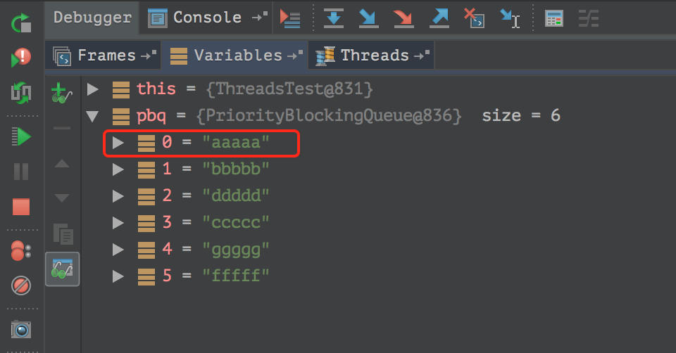

本文总结一下常见的阻塞队列
1. ArrayBlockingQueue
有界队列，且大小不可变
构造函数支持是否公平性，针对的是等待线程，比如有10个线程阻塞在take()操作上，一旦队列有数据了，是否公平性的让10个线程获取数据
1 | /** 出列条件 **/ |
Condition 条件队列， 代替了Object的wait()和notify()
| Object | Condition |
|---|---|
| wait() | await() |
| notify() | signal() |
| notifyAll() | signalAll() |
注意Condition是接口，可以通过如下获取实例
1 | ReentrantLock lock = new ReentrantLock(); |
1.1 入队 & 出队
入队
- add(E e) ：将指定的元素插入到此队列的尾部（如果立即可行且不会超过该队列的容量），在成功时返回 true，如果此队列已满，则抛出 IllegalStateException
- offer(E e) :将指定的元素插入到此队列的尾部（如果立即可行且不会超过该队列的容量），在成功时返回 true，如果此队列已满，则返回 false
- offer(E e, long timeout, TimeUnit unit) :将指定的元素插入此队列的尾部，如果该队列已满，则在到达指定的等待时间之前等待可用的空间
- put(E e) :将指定的元素插入此队列的尾部，如果该队列已满，则等待可用的空间
出队
- poll() :获取并移除此队列的头，如果此队列为空，则返回 null
- poll(long timeout, TimeUnit unit) :获取并移除此队列的头部，在指定的等待时间前等待可用的元素（如果有必要）
- remove(Object o) :从此队列中移除指定元素的单个实例（如果存在）
- take() :获取并移除此队列的头部，在元素变得可用之前一直等待（如果有必要）
注意: add(E e) 方法不是阻塞的，队列已满时会抛异常。
其他
ArrayBlockingQueue初始化以后容量不变，不涉及到扩容
通过Object数组来构建队列
使用了生产者消费者模式，对外部暴露的方法有很多，比如上面的入队出队方法，但是核心内部实现 入队列 只有一个方法：
1 | private void enqueue(E x) { |
出队列方法：
1 | private E dequeue() { |
注意这两个方法都是放在lock块中执行的。
1.2 LinkedBlockingQueue
LinkedBlockingQueue 和ArrayBlockingQueue都实现了BlockingQueue 接口，对外api基本上一致；都可以使用在生产者消费者模式下，并且都支持阻塞和非阻塞的方法；二者保持并发安全性都是通过加锁ReentrantLock ；主要讲几点区别：
ArrayBlockingQueue是有界的，必须制定大小；而LinkedBlockingQueue默认是无界的（可以通过指定大小来变为有界）；- 锁使用的比较。
ArrayBlockingQueue内部使用1个锁来控制队列项的插入、取出操作，而LinkedBlockingQueue则是使用了2个锁来控制，一个名为putLock，另一个是takeLock，但是锁的本质都是ReentrantLock。 - 根据
LinkedBlockingQueue的官方描述，它是具有更好吞吐性能的；Linked queues typically have higher throughput than array-based queues but less predictable performance in most concurrent applications.
1.3 PriorityBlockingQueue
无界队列，所以入队(put)不会阻塞，出队take才会阻塞，默认初始队列容量大小是11。 内部使用堆结构，能保证取操作(take/poll…)时获取到最优先(最大、最小)的元素，内部元素使用二叉堆数据结构来维护
测试代码
1 |
|
断点1处的队列元素情况：
PriorityBlockingQueue可以保证队列头上的元素是最小的(优先的)，但队列中的元素并没有进行排序，因为并没有排序的必要，只需要构建一个小顶堆，保证每次从队列头上获取到最小的元素即可。
取操作时会保证头元素始终是最优先的，最终的输出结果即是按顺序输出，整个存取过程其实就是二叉堆排序的过程
1.4 DelayQueue
延时Queue，先来看下构造函数
1 | public class DelayQueue<E extends Delayed> extends AbstractQueue<E> |
放入DelayQueue的元素必须实现Delayed，且覆盖下面两个方法：
- java.util.concurrent.Delayed#getDelay
用来获取DelayQueue中当前的元素是否已经达到延期时间；同时要根据延期时间来进行排序，要保证每次从DelayQueue头上获取到的元素是最早(最小)延期到达的元素，取出元素(x)时，只判断X元素是否到达延期时间。
- java.lang.Comparable#compareTo
这个方法其实是用在DelayQueue的元素PriorityQueue<E> q = new PriorityQueue<E>()的入队和出队。
DelayQueue的实现，其实就是在PriorityQueue上封装了一层，首先根据延期时间的大小来进行排序，这是完全由PriorityQueue来实现的；然后再调用take()方法的时候，对head头元素进行判断，是否getDelay(TimeUnit unit)小于等于0，如果小于等于0，那么head头元素就取出，否则就调用awaitNanos进行延时等待，然后进行获取head头元素(循环操作)。
take() 方法如下:
1 | public E take() throws InterruptedException { |
测试代码：
1 | public class DelayQueueTest { |
1.5 SynchronousQueue
SynchronousQueue是同步阻塞队列，这里同步的含义是指，一个put线程存元素时，必须等待一个take线程取元素，两个匹配才将数据进行交换(transfer)
该队列有公平性，公平指的是，多个put线程存元素，会先take等待最久的put线程；反之亦然，多个take线程阻塞等待的时候，put线程的元素会被等待最久的take线程拿走元素。通过构造函数指定公平性。
SynchronousQueue其实是没有大小的空队列，不提供空间来存储元素(put进来的元素)
1 | abstract static class Transferer<E> { |
1 | // 写入值 |
1 | // 读取值并移除 |
写入值和读取值都使用SynchronousQueue.Transferer#transfer(E e, boolean timed, long nanos)方法。另外
由于SynchronousQueue没有使用AQS而是直接用了CAS，transfer的过程实现还是比较复杂的.
1.6 LinkedTransferQueue
前面的阻塞队列，在进行存取操作的时候，会锁住队列，SynchronousQueue 队列虽然没有锁队列，但是它是没有容量的；而LinkedTransferQueue
队列采用无锁模式，且有容量，它是基于链表的FIFO无界阻塞队列
TransferQueue接口算是对BlockingQueue一种扩充, LinkedTransferQueue实现了TransferQueue。
LinkedTransferQueue (@since jdk 1.7)，是基于链表的FIFO无界阻塞队列，采用一种预占模式，消费者线程(take、poll)到队列中取元素时，如果发现队列为空，则会生成一个null节点，然后等待生产者(park住了)。生产者线程进行put、add、offer操作时，发现有一个队列中有null元素节点，这时生产者直接将元素填充到该节点上，并唤醒该节点的线程(消费者线程)，被唤醒的消费者线程读取队列数据返回。
生产者端：
生产者存储元素的操作，由于是无界队列，所以不会阻塞，直接将元素存入队列，并且返回true
1 | public void put(E e) { |
消费者端：
1 | public E take() throws InterruptedException { |
所有的读取、存储元素都调用该方法: private E xfer(E e, boolean haveData, int how, long nanos)，核心是寻找匹配节点，找到了即读取元素返回，没有则构建null节点并进行等待。
个人感觉这个队列的实现还是比较难懂的，比SynchronousQueue还难…….
1.7 一点小思考
DelayQueue、PriorityQueue和PriorityBlockingQueue是优先队列， 并不是排序队列，不要误认为队列中的元素都是有序的，不要使用遍历(forEach)来保证顺序，要跟TreeMap和ConcurrentSkipListMap区分开。原因是因为优先队列使用了堆结构来存储元素，只保证根元素是最大(最小)，并未排序(不需要)，并不能保证容器内所有元素有序。- 要注意
DelayQueue队列存放元素，并不表示，严格的到时 -> 立即取出，有可能队列的元素全部都已经到时，但是还是存在于队列中，必须要等到有显式的take()操作，这需要业务代码自己实现，所以这个队列不是一个全自动的队列，全自动的队列只需要将元素注册到队列中，延时时间到达，自动出队并执行某方法。 AtomicReference、ConcurrentLinkedQueue、LinkedTransferQueue的本质是乐观锁，乐观锁的在激烈竞争的时候性能都很不好，乐观锁应使用在非激烈竞争的场景，如果竞争激烈，就应该使用悲观锁。
在激烈竞争中，LinkedTransferQueue的性能，低于LinkedBlockingQueue
1.8 参考链接
http://cmsblogs.com/?p=2418
https://javadoop.com/post/java-concurrent-queue
https://www.cnblogs.com/duanxz/p/3398446.html
https://tech.meituan.com/disruptor.html
https://www.jianshu.com/p/ae6977886cec
http://cmsblogs.com/?p=2433
https://zhuanlan.zhihu.com/p/29227508